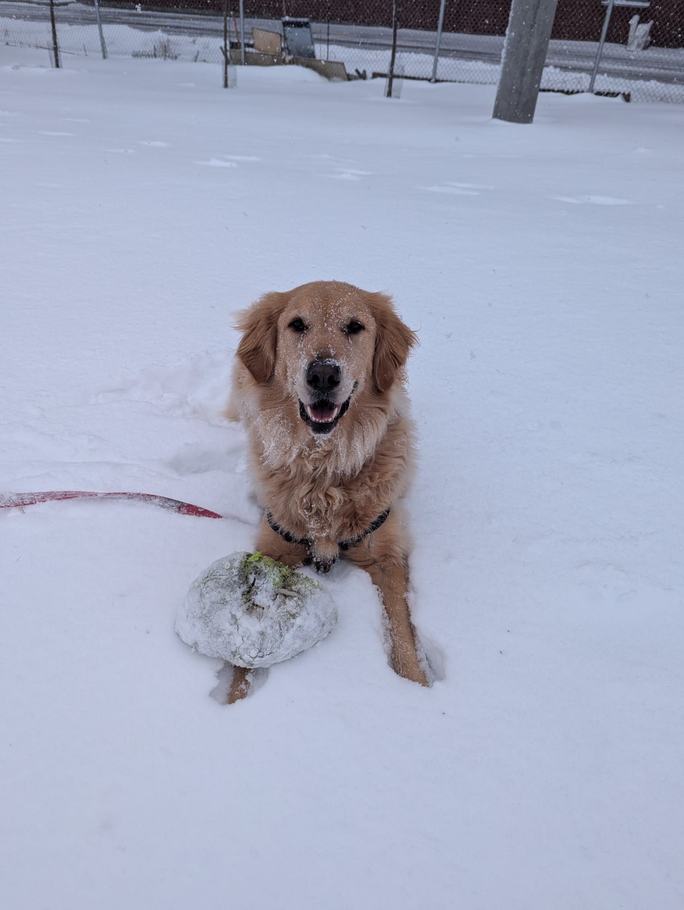
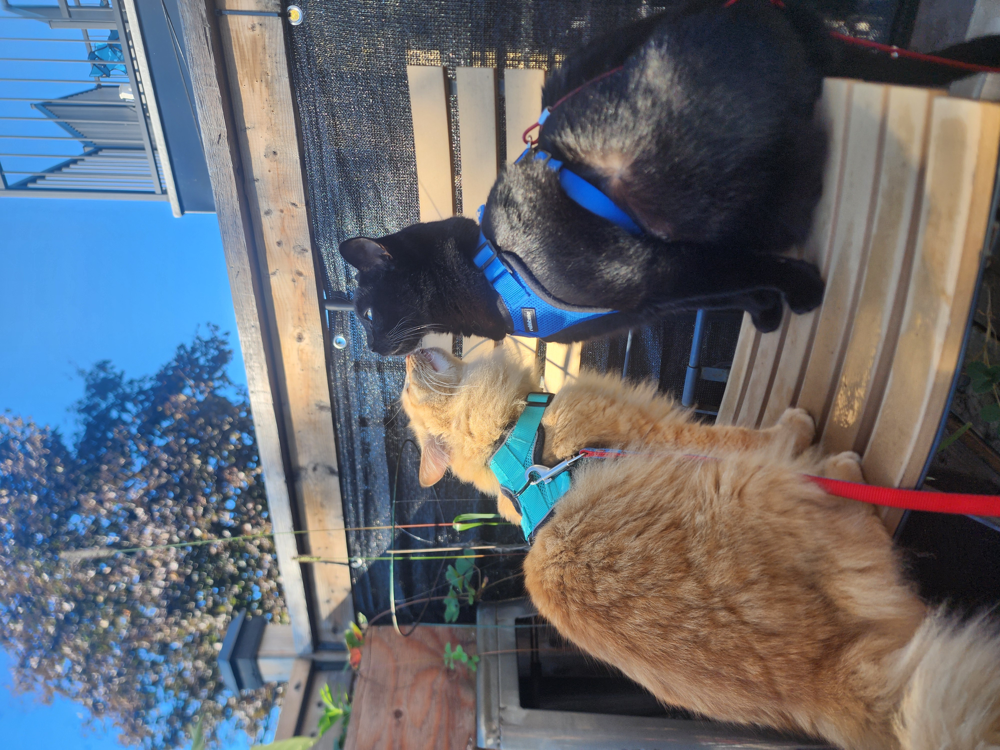
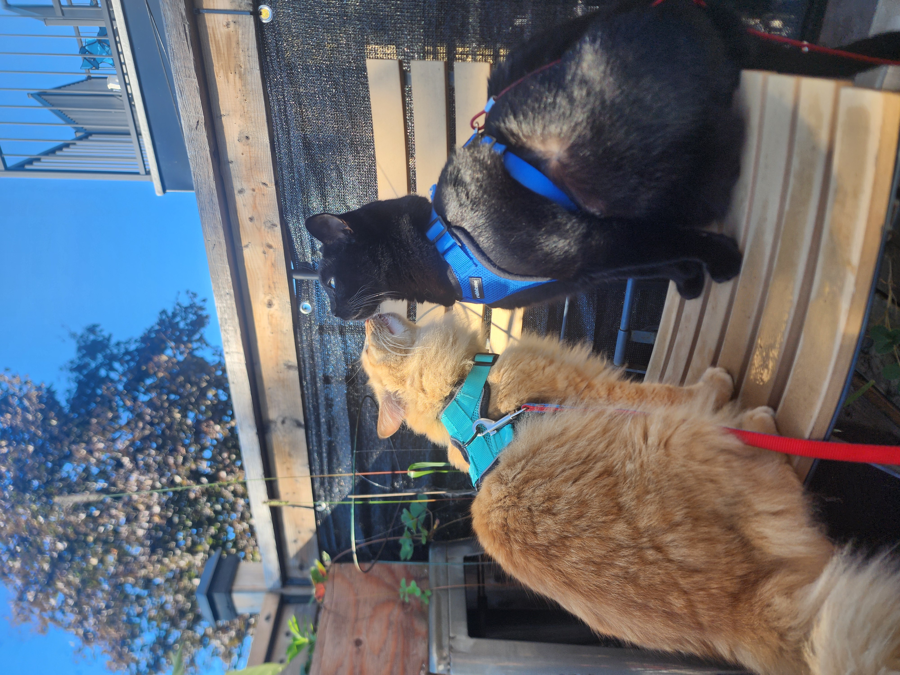
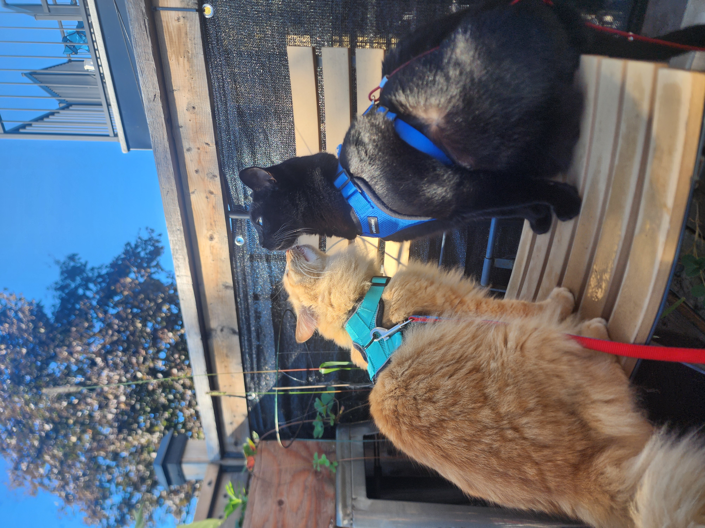
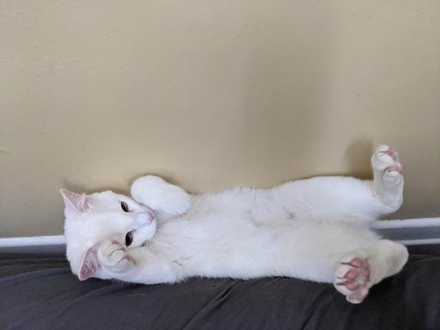

Our Services

 
Dog/Cat Walking:

Dog/Cat Walking:

Dog/Cat Walking:
Give your dog or cat the exercise and mental stimulation they need, with our professional pet walking services. Whether it’s a quick stroll around the block or a longer adventure, our walkers tailor each walk to suit your pet's pace, personality, and preferences. We take pride in ensuring they get the attention and exercise they deserve!

Pet Sitting: When you can’t be there, we’re happy to step in and care for your dog or cat in the comfort of your own home.Our pet sitting service provides your pet with companionship,routine, and the same level of love they get from you.Whether it's just for a few hours or an extended stay,your pet(s) will feel right at home with us.
Additional Services:
Puppy Visits: For those younger fur babies, we offer visits to ensure they get the potty breaks, playtime, and attention they need while you're away. Playtime & Socialization: We know that playtime is essential! Our walkers and sitters will spend time engaging your dog in games and activities that match their energy level. Feeding & Medication Administration: We can take care of feeding schedules and administering medication as needed, ensuring your dog stays on track with their health routines.